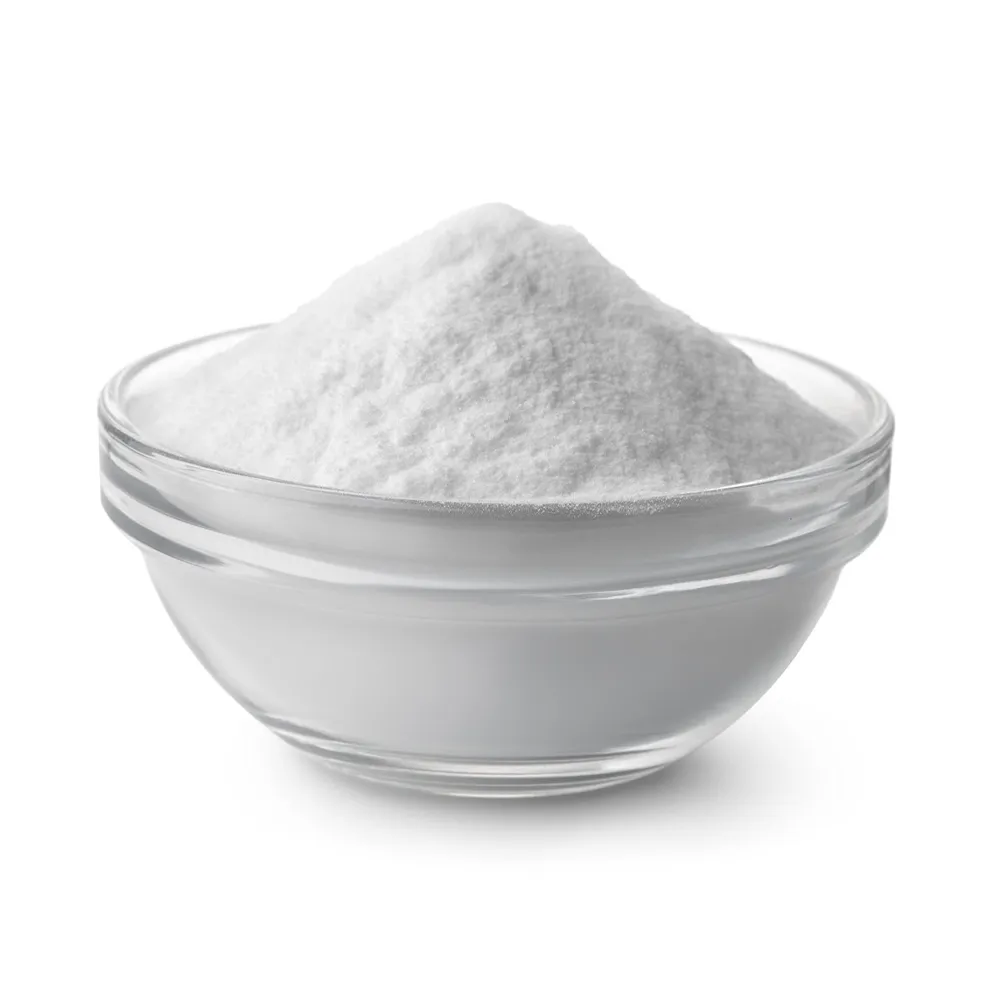

Um olhar interativo sobre o bicarbonato de sódio
Representação estilizada e informações educativas. Clica nos átomos da molécula pra abrir explicações específicas — tudo pensado pra ser fácil de entender e apresentar.
Informações principais
- Nome químico
- bicarbonato de sódio
- Nome usual
- bicarbonato de sódio (baking soda)
- Fórmula
- NaHCO3
- Tipo de ligação
- Iônico (Na+ e o ânion HCO3−) e covalente/ressonante dentro do ânion.
- Geometria
- Ao redor do carbono: trigonal plana (ressonância entre os oxigênios do grupo carbonato).
- Estado físico (25°C)
- Sólido cristalino branco.
Representação Visual Interativa

Propriedades e comportamento
- Solubilidade: Solúvel em água; em solução forma leve alcalinidade.
- Ponto de decomposição: Decompõe-se quando aquecido intensamente, liberando CO₂ e H₂O (temperatura de decomposição típica na faixa de centenas de graus Celsius).
- Densidade: Sólido cristalino (valor disponível em fichas técnicas — recomendamos verificar a referência antes de citar valores exatos).
- Condutividade: Em solução aquosa, conduz eletricidade por ser um eletrólito (íons livres).
Industrialmente, o bicarbonato de sódio é frequentemente obtido a partir do carbonato de sódio (produzido pelo processo Solvay). O Na₂CO₃ em solução reage com CO₂ e água para precipitar NaHCO₃, que é então coletado e purificado.
- Agente de fermentação na panificação (libera CO₂ quando aquecido).
- Antiácido para neutralizar excesso de ácido gástrico (uso médico caseiro).
- Produto de limpeza doméstica (abrasivo leve e neutralizador de odores).
- Uso em algumas formulações de extintores portáteis e em laboratórios como reagente tampão.
- Agricultura e horticultura (em aplicações específicas de manejo de solo e pH).
Referências
-
PubChem
https://pubchem.ncbi.nlm.nih.gov/ -
Britannica
https://www.britannica.com/ -
Wikipédia
https://pt.wikipedia.org/